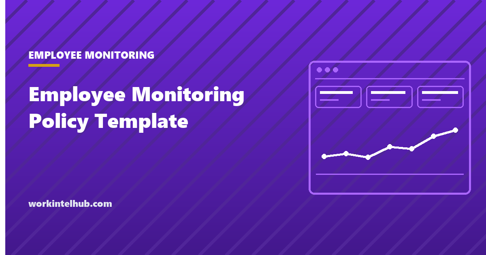

Employee Monitoring Policy Template

Below is a monitoring policy you can copy, with the parts that need your own answers marked in [orange]. It is written to satisfy the notice duties in Connecticut, Delaware, Maine and New York, and to be readable by the people it applies to, which is the harder of the two requirements.
A word on what this is not. It is a starting document, not legal advice, and no template can know what your company actually collects. The sections that matter most are the ones only you can complete. Have counsel read it before it goes out.
Fill these in before you start
Four answers make the rest of the document write itself. If you cannot give them, the policy is not the thing blocking you.
- What is collected. Name each category: applications used, websites visited, active and idle time, screenshots, keystrokes, location, file transfers. Be specific, because a vague list reads as a broader one.
- What is not collected. This section does more for acceptance than any other. Personal accounts, private messages, camera and microphone, activity outside working hours: say plainly what you leave alone.
- Who can see it. Named roles, not "management". Say whether a person can see their own record.
- How long it is kept. A number of days, and what happens at the end of it.
The template
Copy from here. Each block is a section of the finished document.
[Company] uses monitoring software on company owned equipment to protect company and customer data, to meet our legal and regulatory obligations, and to understand how work is distributed across teams. This policy explains what is collected, who can see it, and how long it is kept. It applies to all employees and contractors using company owned devices or company accounts.
On company owned devices and company accounts, the following may be recorded: [list each category, for example: applications and websites used, active and idle time, periodic screenshots].
Collection takes place during working hours only. Monitoring software is installed visibly and appears in the list of installed applications on your device.
We do not collect the content of personal email or personal messaging accounts, we do not enable the camera or microphone, we do not monitor personal devices, and we do not monitor activity outside your working hours. We do not use monitoring data to evaluate individual performance for pay or promotion decisions.
Access is limited to [named roles, for example: the IT security team and the employee's own manager]. Requests to view an individual's record must be approved by [named role] and are themselves logged. You may request your own record at any time by contacting [email address], and it will be provided in full within [number] working days.
Monitoring data is retained for [number of days] and then deleted. Data preserved for an active investigation or a legal hold is retained until that matter concludes.
Monitoring data is used to investigate a specific security or policy concern, to meet regulatory obligations, and to understand workload at team level. It is not used to rank individuals, and an activity score is not a performance measure.
You may ask what is held about you, ask for it to be explained, and raise a concern about this policy without consequence, by contacting [email address]. Where state or national law gives you further rights, this policy does not limit them.
We will give at least [number of days] notice before changing what is collected. This policy was last updated on [date].
State specific notice wording
Three states require a notice, and they require different things. Add the block that applies to where your employees sit, which is not necessarily where the company sits. Our guide to employee monitoring laws by state covers the statutes and the penalties in full.
Connecticut
Connecticut General Statutes section 31-48d requires prior written notice describing the types of monitoring, plus a notice posted conspicuously where employees can read it. From 1 October 2026, Public Act 26-73 additionally requires the posted notice to identify the specific locations where monitoring may occur, posted in those locations, and a plain language statement to every employee hired on or after that date.
Electronic monitoring takes place at the following locations: [list each site or area]. The types of monitoring that may occur are set out in section 2 of this policy. This notice is posted at each of the locations listed above. Activities that are prohibited and that may be monitored without further prior written notice are: [list them, or write: none].
Delaware
19 Delaware Code section 705 requires either a daily electronic notice each time an employee accesses employer provided email or internet, or a one time notice the employee acknowledges in writing or electronically. The acknowledgement is the part employers most often miss: an unsigned notice does not satisfy the statute.
Notice: use of [Company] email and internet services may be monitored or intercepted. By continuing, you acknowledge this notice.
New York
New York Civil Rights Law section 52-c requires prior written notice upon hiring to every employee subject to monitoring, acknowledged by the employee, plus a copy posted conspicuously.
[Company] advises that any and all telephone conversations or transmissions, electronic mail or transmissions, or internet access or usage by an employee by any electronic device or system may be subject to monitoring at any and all times and by any lawful means.
The acknowledgement
Delaware and New York both require the employee to acknowledge the notice. Everywhere else it is still worth collecting, because it converts a disputed conversation into a document with a date on it. A separate monitoring consent form covers this in more detail, including where consent is the wrong word.
I have read the [Company] Employee Monitoring Policy dated [date]. I understand what is collected, who can access it, and how long it is kept, and I know who to contact with questions.
Name: [ ] Signature: [ ] Date: [ ]
If you employ in Illinois, two further statutes bear on what the policy can say, and they are covered in our page on the Illinois workplace privacy rules.
Five ways this policy goes wrong
Written after the software is installed. The notice duty in all four states is prior notice. A policy circulated in week three does not fix week one.
The "not collected" section is missing. This is the section people read most carefully, and its absence reads as an answer.
Access described as "management". Name roles. Anything vaguer is read as everyone.
No retention period. "As long as necessary" means forever, and everyone reading it knows that.
It covers a hidden agent. Covert monitoring cannot satisfy a notice duty, and in a notice state it converts a policy decision into a penalty. Our explainer on computer monitoring covers what these agents actually do.
Key takeaways
- Four answers make the policy write itself: what is collected, what is not, who can see it, and how long it is kept.
- The 'what is not collected' section does more for acceptance than any other, and is the one most often left out.
- Connecticut, Delaware, Maine and New York each require notice, and each requires something different.
- Connecticut changes on 1 October 2026: the posted notice must name the specific monitored locations.
- Delaware and New York require the employee to acknowledge the notice. An unsigned handbook does not satisfy either.
- Notice must come before monitoring starts. A policy circulated afterwards does not cure the gap.
- Name roles rather than writing 'management', and give a retention period in days rather than 'as long as necessary'.
Frequently asked questions
Is this employee monitoring policy template free to use?
Yes. Copy it, edit the marked sections, and have counsel review it before it goes out. It is a starting document rather than legal advice, and no template can know what your company actually collects, which is the part that matters most.
What must an employee monitoring policy include?
At minimum: what is collected, what is not collected, who can access it, how long it is kept, how it is used, and who to contact with questions. In Connecticut, Delaware, Maine and New York the notice must also meet that state's specific statutory requirement.
Do employees have to sign a monitoring policy?
In Delaware and New York, yes, the notice must be acknowledged by the employee. Connecticut requires prior written notice and a posted notice but does not require a signature. Elsewhere no statute requires it, and collecting one is still worth the two minutes it costs.
Does a monitoring policy have to be posted on the wall?
In Connecticut and New York, yes, a notice must be posted conspicuously where affected employees can see it. From 1 October 2026 Connecticut also requires the notice to identify the specific locations where monitoring occurs and to be posted in those locations.
Can I use one policy across every state?
Yes, and it is usually simpler than maintaining fifty. Write to the strictest requirement that applies to anyone you employ, then add the state specific notice blocks for Connecticut, Delaware, Maine and New York. Notice duties follow the employee's location rather than the head office.
What happens if there is no monitoring policy?
In Connecticut and New York, penalties run up to $500 for a first offence, $1,000 for a second and $3,000 for a third and each subsequent one. In Delaware it is $100 per violation, enforceable in court. Outside those states the cost is not statutory but it is real, because monitoring discovered rather than disclosed is very hard to explain afterwards.
Should the policy cover personal devices?
It should say explicitly whether personal devices are monitored, and the cleanest answer is that they are not. Once monitoring extends to hardware an employee owns, the business use argument weakens considerably and off duty conduct and state privacy rules apply with more force.